시민에너지·햇빛소득마을
[부산형 햇빛소득②] 기업 PPA로는 수익률 2%대…"부산시가 전기 사서 배출권 비용 아끼자"
부산연구원 "고정가격 상한 150원 아래, 주차장 태양광은 145원에 팔면 원금도 못 건져" / 부산시 배출권 구매비 7억 원대서 20억 원 넘게…시가 PPA 구매자 되면 IRR 5% 넘어 / 전력거래소 "직접 PPA 300kW 이상 고압 요건 완화 검토" / 자유토론서 "협동조합에 맡겨 달라"…선로 1.4km·부서 칸막이 지적

[부산형 햇빛소득①] 공공부지 10MW에 시민 45억…2027년 1월 시범 공모
부산시 17일 옛 시장 관사 도모헌서 에너지신산업 협업네트워크 포럼 / 2030년까지 해마다 2.5MW, 사업비 150억 원 중 시민 30%·PF 70% / 부산테크노파크 "정부 햇빛소득마을 80% 조건부 선정…부지·판로·자금·신뢰 원스톱 지원"

고흥군 "10GW 에너지 대전환, 수익은 군민 에너지연금으로"…세계태양광총회서 공공주도 영농형 1GW·햇빛소득마을 구상 공개
16~19일 대전 총회에 홍보관…주민이 건의한 345kV 송전선로 국가계획 반영 추진, 해상풍력 예비지구 지정도 준비

강원 고성 1호 햇빛소득마을 장신1리 400kW 다음 달 준공…연 8,129만 원 수입 예상
2호 화곡리 993.3kW·16억5,000만 원은 이달 현장 평가, 군은 공약 15곳 목표로 흘1리 등 13곳 후보지 점검
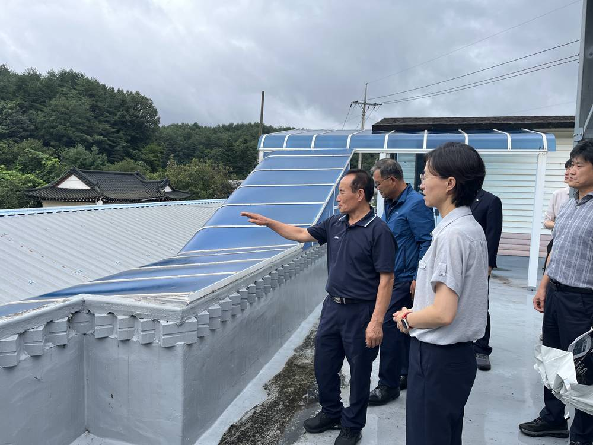
평창군, 공공주도 육상풍력 200MW로 '바람연금' 첫발…18일 동서발전·강원개발공사와 협약
방림·도사리·흥정 3개 단지, 군 지분 배당과 초과 이익으로 이익공유기금 조성…1인당 환원액·지급 방식은 아직 미정

강원 접경 4개 군 "군 유휴부지·햇빛·물로 에너지 연대"…영농형 태양광 군민펀드·발전 수익 기본소득 제안
철원·화천·양구·인제 정책포럼…"철원 농지 60%가 외지인 소유, 발전 수익 밖으로 샌다", 철원 태양광·화천 양수발전 잇는 '접경지역 에너지 협력권' 구상

남호주 아파트 주민도 '공동 태양광·배터리'…연방·주정부 1,780만 호주달러 지원, 설치비 절반 보조에 나머지 무이자 융자
'StrataCharge' 사업, 공동주택 한 곳당 보조금·융자 각 최대 4만7,500호주달러…집주인·세입자 모두 전기요금 절감, 남호주 12명 중 1명이 공동주택 거주

미국·캐나다 원주민 5만 가구에 태양광·배터리…원주민 비영리단체, 25억 달러 모금 나서
Indigenized Energy와 글로벌 시티즌 공동 캠페인, 2027년 첫 사업 목표…'공동체 소유' 에너지 강조

청주 17개 마을 햇빛소득마을 3차 공모 신청…태양광 1만6,082kW·설치비 236억 원
1·2차 선정 4곳은 사업화 준비…청주시 "계통 연계가 관건, 12월 소규모 공익형 우선 접속에 기대"

경기 공공 RE100 태양광 가동중지 3년간 1,914일…'RE100 소득마을'은 3개 시군에 58.8% 쏠려
지영일 경기도의원 행정사무감사서 '설치보다 생산' 성과관리 주문…주택 태양광은 목표 10만 가구의 49.3%

제주 이창흠 초대 기후경제부지사 "풍력·햇빛 이익을 도민 소득으로"…주민참여형 사업을 도민펀드로 넓힌다
2035년 탄소중립 목표, 약 2GW 추자해상풍력 최우선…신규 발전사업 주민 채권·펀드 투자, 공유화기금은 취약계층·공동체 재원

미국 앤아버시 공영 '지속가능 에너지 유틸리티', 저소득 가구까지 넓혀…2027년엔 시 전역에 개방
브라이언트 동네 90여 가구에 지붕 태양광·배터리 설치한 시범사업 다음 단계, 새로 20곳 설치

전남광주시의회 "계통 못 잇는 태양광은 희망고문"…햇빛소득마을 126곳 중 바로 접속 가능한 곳 5곳뿐
신민호 의원, 에너지산업본부 행정사무감사서 지적…영광 월평마을 1MW에 18억 원 들였지만 수익 없어, "소규모 농가 우선·주민 균등 참여 보장해야"

독일 바이에른 이젠 시민풍력조합, 조합원 470명·출자금 80만 유로 모아…"착공은 몇 년 뒤, 지금은 준비 단계"
'시민에너지 이젠탈' 경험 나눔 행사…풍력 7기 주민 소유 푹스탈 전 군수 "돈이 마을에 남는다"

이탈리아 사보나시, 리구리아 '연대형 재생에너지 공동체' 참여…시가 전기 생산·소비하는 '프로슈머'로, 혜택은 취약 가구에
시 집행위원회 승인 거쳐 시의회 표결 남아…공동체 수익을 에너지 빈곤 가구 지원에 돌리는 'CERS 리구리아', 기후행동계획(SECAP) 과제의 하나

美 미네소타 전력협동조합 크로우윙파워, 조합원에 약 300만 달러 돌려줘…11월 전기요금에서 차감
2010년분 출자배당 111만1,000달러에 도매 협동조합이 배정한 1992~1998년분 182만7,000달러 더해

모햇 햇살그린협동조합, 상업운전 태양광 1,427곳·176.1MW…한 달 새 46곳 늘어
조합원 투자금 3,497억5,000만 원 중 출자금은 15억2,700만 원…10월 발전매출은 SMP 하락에 6.8% 줄어

美 래퍼해녹 부족, 옛 수도 터 교육관에 지붕 태양광…원주민 기업이 보조금 신청부터 설치까지 무료로
12.32kW·패널 28장, 가동 뒤 2MWh 가까이 생산…설치비는 '부족 태양광 가속 기금'에서

수원햇빛발전㈜ 밑그림 나왔다…공영주차장 13곳 5MW부터 20MW·328억 원, 공공 배당은 기후대응기금으로
수원시·수원도시공사·에너지협동조합 참여, 시민펀드로 이익 나눠…16일 수원시의회서 창립설명회

횡성군 햇빛소득마을 5곳으로…하대리·용둔리 이어 학곡1리·삼거리·매일2리 2차 선정
하대리는 주민 협동조합이 1MW 태양광 추진, 1차 '즉시 착수' 9곳에 들어…군은 설명회·조합 설립·계통 협의 지원
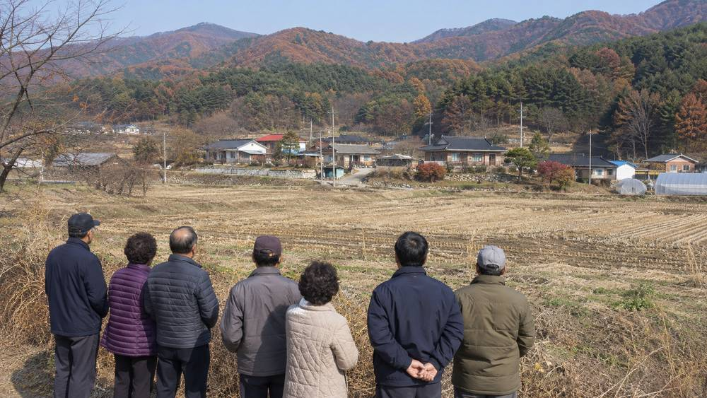
전남광주시의회 "햇빛소득마을, 선정 뒤가 더 중요"…녹색에너지연구원에 준공 후 기술·경영 지원 주문
박원종 에너지산업산림위원장 행정사무감사서 지적…연구원 "회계법인과 AI 정산 시스템 도입 중"

캐나다 캘거리 전기·가스 판매사, 이익 100%를 지역 성소수자 단체에…"요금이 공동체 기금이 된다"
사회적기업 Q-TILITIES, 대표는 월급 안 받고 5년 안에 10만 달러 이상 환원 목표

임실 '에너지특구' 추진위 출범…150MW 태양광으로 군민 소득 구상, "실행계획부터 내놔야" 목소리도
288석에 약 150명 참석…집적화단지·분산에너지 특화지역 중 어떤 제도로 갈지, 부지·전력망 확보가 과제

독일 자르베크 주민 에너지협동조합, 1년 새 조합원 380명→574명…새 풍력에 300만 유로
짓고 있는 신닝엔·미덴도르프 풍력 터빈에 주민 돈 몰려…조합 자산도 크게 늘어

영국 정부 지원 '넷제로 허브' "지역에너지, 주민이 에너지의 주인이 되는 일"
잉글랜드 5개 허브 중 북동부·요크셔 허브 책임자 "수익은 지역에 남고 주민이 한데 모인다"

스페인 산타폴라시, 학교·체육관 지붕 200kW로 지역에너지공동체 출범…주민·상가 200곳 전기 최대 절반 충당
연 30만kWh 넘게 생산, 발전 지점 반경 5km 안이면 참여 가능…전기협동조합 그룹이 사업 도와

독일 조합원 4만2,000명 에너지협동조합 프로콘에 통신사도 출자…지분 1,266좌·6만3,300유로, "배당도 다시 출자"
아미바 운영사 STROTH Telecom 조합원 가입…"지분 수와 관계없이 1인 1표 민주적 구조에 끌렸다"

인도네시아 '마을 태양광 100GW'에 협동조합 8만 곳 동원…실제 운영은 1%, "위에서 만든 껍데기 조합" 우려
3년 안에 100GW·약 710억 달러 계획…과거 마을 태양광은 관리 주체 없어 '부서진 기념비' 됐다
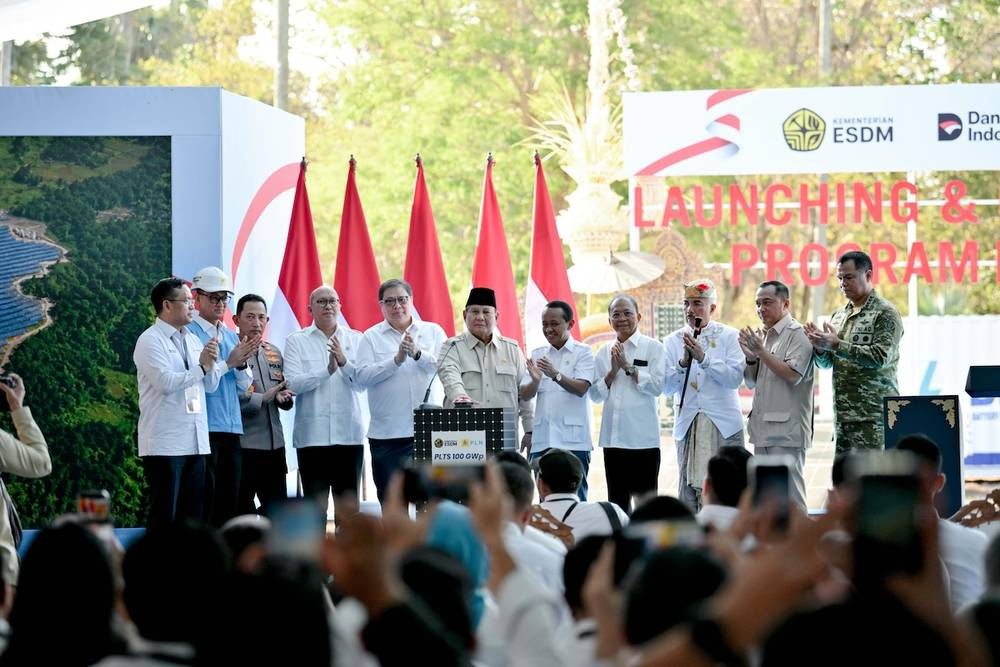
독일 에너지협동조합에 여성 조합원 적다…연구소 IÖW "진입 문턱 낮추면 시민에너지 더 강해져", 브레멘 '여성 감사위원 프로그램' 등 사례 제시
연방경제에너지부 지원 EPOS 연구 정책제안서…쉬운 말·하이브리드 회의·자원봉사 쉼 허용 등 권고

정부 "조건부 선정 햇빛소득마을도 사업화 지원"…ESS 구축 사업 11월 공고, 1MW 이하 주민참여 태양광 계통 우선접속 12월 말 시행
행안부·기후부·농식품부 설명자료…"523곳 중 즉시 착수 36곳" 지적에 저수지·비축농지·도로 사면 등 유휴 국공유지 제공 계속

수원 두 에너지협동조합, 시·시민 함께하는 '수원햇빛발전㈜' 창립 설명회 16일 연다…2027년 상반기 설립 목표
12~25일 조합원 주간, 경기햇빛자전거길 1호·시화호조력발전소 견학…태양광 수익과 연계해 도시숲 후원금 1,300만 원 기부
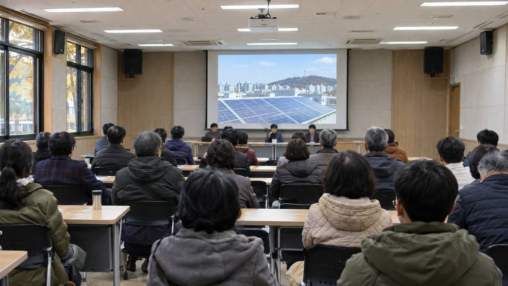
전남광주 햇빛소득마을 126곳 ESS 조건에 주민 초기 부담 커…이재창 시의원 "폐도·제방·철도 주변까지 부지 넓히고 주민 부담 낮춰야"
통합특별시의회 행정사무감사서 도로변 태양광 등 새 부지 발굴 주문…에너지산업본부 "가상발전소 사업자 지정해 마을과 협의"
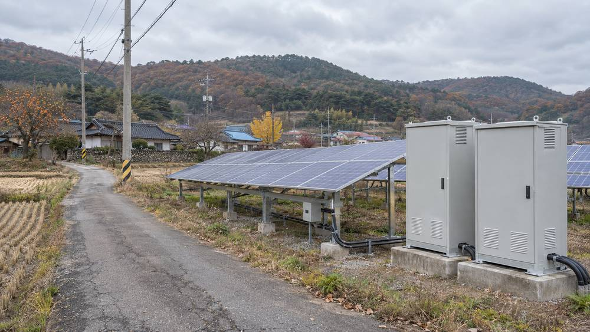
호주 시드니 배전회사, 공장·창고 지붕 태양광 남는 전기를 세입자·아파트 주민과 나누는 '공동체 전력망' 시범에 에너지 지도 공개
오스그리드, 마스콧-보타니·캐링바·센트럴코스트 북부 3곳 접속 여유·출력제한 자료 공개해 태양광·배터리 들어설 자리 안내…공동체 배터리로 이익도 지역에 나눠

강원 9개 시·군 19개 마을, 햇빛소득마을 3차 공모 도전…12월 결과 발표
1·2차 공모에서 도내 46곳 이미 선정…행안부 "3차에서 전국 200곳 이상 마을공동체 지원"

눈의 고장 일본 나가오카에서 시민 65명이 '시민공동발전소'…출자금으로 지붕·농지 위 태양광, 수익은 출자자에게
2023년 설립한 일반사단법인 '나가오카 자연에너지', 학교 출장수업·소수력 체험도…"연간 일사량 간토의 약 80%"

미국 플로리다 오캘러시 공영전력 '공동체 태양광 구독' 6년 만에 접는다…최대 가입자 빠지자 17MW 중 2%도 안 남아
태양광 쓰는 만큼 kWh당 1.6센트 더 내는 방식, 주택 가입은 "미미"…시의회 17일 표결, 12월 1일부터 새 가입 중단

이탈리아 발사모자 재생에너지 공동체, 25가구 '공동구매'로 태양광·히트펌프 함께 설치…EU 집행위 "본받을 시범 사례"
시민·소상공인 102명 협동조합, 2024년 출범 뒤 태양광 200kW 넘게 설치…자원봉사자 집집마다 찾아가 설명회 4번에 75명

이탈리아 토르토나에 과학기술단지 주도 재생에너지 공동체…"참여자 전기요금 25~40% 절감"
첫 발전소 약 200kW로 시작해 750kW까지…토르토나 일대 18개 코무네 대상, 2026년 말 가동 목표

영국 셰틀랜드 "버려지는 풍력 전기로 섬 주민 요금 낮춘다"…의회 주도 '셰틀랜드 공동체 전력 프로젝트' 시동
가구 40%가 에너지빈곤인데 터빈 103기 바이킹 풍력은 송전 막혀 멈추기도…GB에너지·오프젬·SSE 등 실무단 참여, 2028년부터 시범사업 목표

뉴욕시에 '시 소유 재생에너지 개발공사' 세우자…시민단체 보고서 "공공 배터리 200MW만 깔아도 요금 연 1억7,000만 달러 절감"
기후·공공전력 단체 3곳 'PowerNYC' 제안…학교·병원·공공주택 지붕에 태양광·저장장치·지역 열망 직접 개발, 수익 다시 투자하는 자립형 공공 개발자

스코틀랜드 송전망 회사 500만 파운드 '넷제로 기금', 주민 주도 사업 26곳 지원 마쳐…"1파운드 넣어 사회적 가치 2.85파운드"
SP에너지네트웍스 기금, 중부·남부 공동체 건물 단열·저탄소 난방·친환경 교통 지원…워크숍 32회 450여 명, 22곳 전문 자문, 이산화탄소 2만5,000톤 넘게 줄여

독일 페를레베르크 두 마을 주민 "태양광단지 반대"…구속력 없는 주민 의견조사에도 개발사 41헥타르 계획 접어
데르겐틴 11명 중 반대 8·기권 3, 쥐코 35명 중 찬성 10·반대 19…같은 군 실데에서도 9월 조사 때 80% 가까이 반대

독일 바이에른 오버란트 시민재단 20년…군 지원금 1유로를 18유로 일로 키웠지만 "2035년 재생에너지 100%까지는 갈 길 멀다"
미스바흐군 전기는 재생에너지 60%, 난방 25%·수송 7%에 그쳐…해마다 에너지 비용 4억9,500만 유로 중 3억500만 유로가 지역 밖으로

독일 쾰른 오센도르프, 에너지협동조합과 주택협동조합이 435가구에 세입자 태양광…저장장치 670kWh 붙여 전기요금 10% 싸게
건물 55동 지붕에 750kW, 단지 전기의 절반을 지붕에서…협동조합 "2027년 EEG 개정되면 작은 세입자 태양광은 못 짓는다"

전력망 막혀 조건부 선정된 화순 수동마을 1MW 햇빛소득마을, 저장장치로 계통 연결 길 연다…설치·운영비는 민간 통합발전소 사업자가
49가구 주민 모두 동의한 사업…기후에너지환경부 장관 11일 현장 점검, 이번 주 안에 햇빛소득마을 ESS 사업자 공모
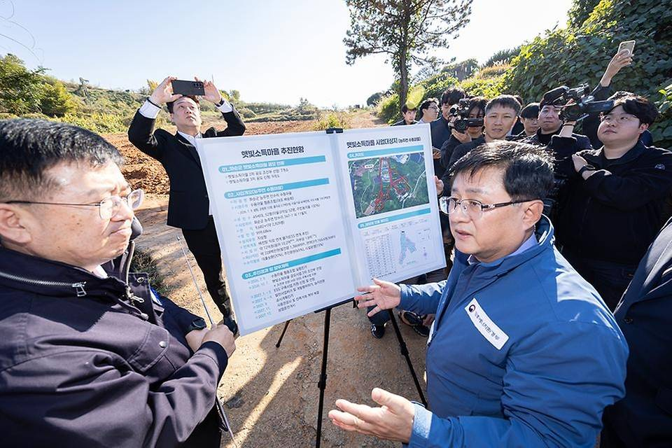
미국 델라웨어, 상업용 건물 8곳 지붕에 19MW 넘는 커뮤니티 태양광…집이나 지붕 없어도 할인 전기 받는다
부동산 개발사와 태양광 업체 협력, 뉴캐슬 카운티 델마바 전력 공급 구역…3곳은 주 인허가 신속 처리 대상
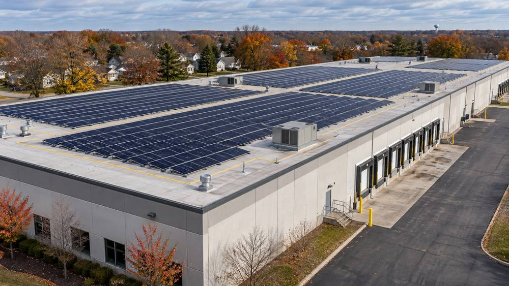
공공이 앞장선 제주·나주의 에너지 전환…풍력 공유화기금·나주형 햇빛연금으로 이익 나눴지만 전력망 포화가 숙제
제주에너지공사 풍력 59.53MW 운영·한림해상풍력 주민 1,009명 1인당 연 351만 원…나주 허가받고 못 짓는 태양광 약 2,700곳

남원 9개 마을 햇빛소득마을 조건부 선정…시의회 연구단체 "이제는 사업화", 부지 발굴·자부담 지원 등 5대 과제 논의
여주 구양리·완주 서봉마을 사례 공유…발전수익으로 무료 점심·행복버스, 70세 이상 월 5만 원 경로연금
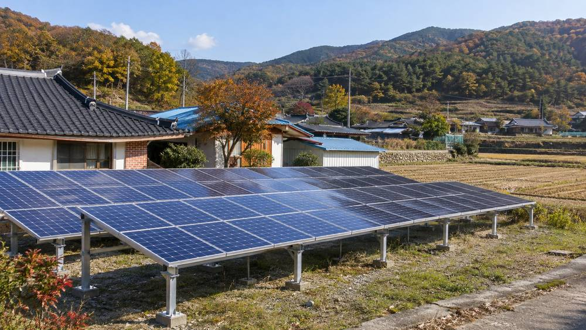
순창군, 공유재산 부지에 햇빛소득마을 100곳 만든다…전북개발공사·한전과 공공주도형 발전 협약
2030년까지 5년간 부지 함께 발굴, 개발공사가 투자·건설·운영…12월 조례 제정, 내년 1월 주민설명회

미국 조지아 조합원 소유 전력협동조합 코스털 일렉트릭, 남은 이익 153만 달러를 조합원에게 돌려준다
2011~2013년 전기를 쓴 조합원 대상…지금까지 돌려준 출자배당 2,300만 달러 넘어, 조합원 2만여 명

미국 캘리포니아 소보바 원주민 부족 소방서, 태양광 마이크로그리드에 바나듐 흐름전지 더해 정전 때 10시간 이상 버틴다
GRID 얼터너티브가 주 에너지위원회 지원으로 개발…산불 최고위험지역, 24시간 넘는 정전도 겪어
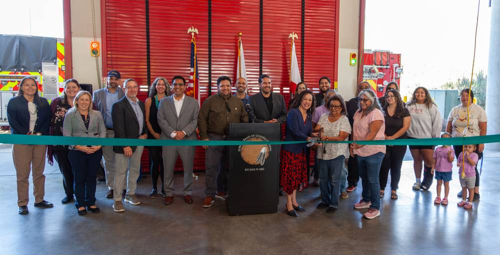
멕시코 푸에블라 농민들, 연구소와 함께 밭 위 태양광 공동체 실험…5kW 모듈로 비료 공장·가공·세 가구에 전기
산티아고 할리친틀라 마을 토나티우 사업…결정은 마을 총회에서, 생산한 전기를 여러 집에 나누는 방법은 아직 숙제


네덜란드 크랄링어폴더르 열 협동조합, 지열 프로젝트 ADL과 열 공급 계약 서명…2029년 4분기 공급 목표
열 용량 25MWth 지열원, 첫 시추는 2028년 중반 계획…온실 농가와 건물에 열 공급

이탈리아 바리 광역시권 첫 재생에너지공동체 '체르 노바' 출범…광역시는 학교 건물 전기 소비로 참여
광역시장·지오이아델콜레 시장이 설립 증서 서명, 시민·중소기업·제3섹터 단체도 창립 회원으로

스페인 바스크 온다리비아 시, 지역 에너지공동체 만들기 위한 주민 설명회 3회 연다
11월 18일·12월 10일·16일 오후 6시…구성 방식·조직·설립 절차 차례로 논의, 시청 "주민 의지에 달렸다"
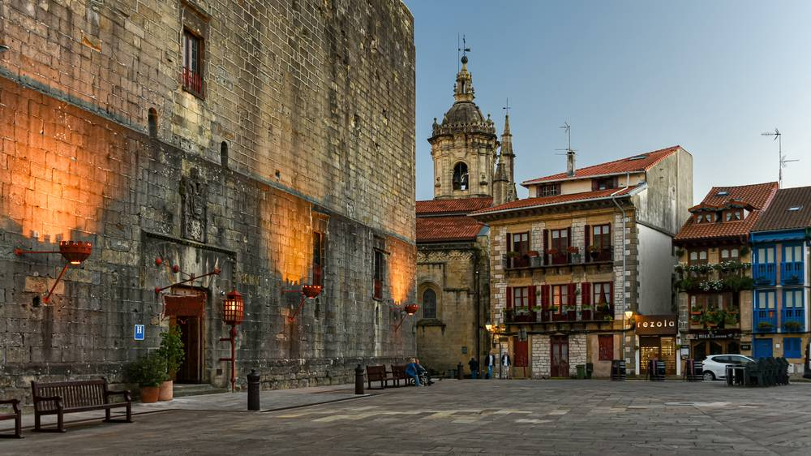
스코틀랜드 SSEN 트랜스미션, 송전설비 인근 주민에게 162만 파운드 지역기금 설계 의견 묻는다
레어그·로가트 주민 대상 설문 11월 16일~12월 14일, 설명회 3회…'사우스 로크신 지역기금'은 2027년 문 열 예정

햇빛소득마을 선정 436곳 가운데 바로 시작할 수 있는 곳은 23곳…하천구역·한전 계통·'동' 명칭에 발목
정부는 올해 700곳 선정을 목표로 속도…지자체 규제와 전력망 부족으로 현장은 멈춰 있어

스코틀랜드 주민 10명 중 7명 "학교·공공건물 지붕에 태양광 달자"…반대는 6%
업계 단체 여론조사, 새집 태양광 의무화 찬성 59%·집 근처 태양광단지 찬성 43% 대 반대 22%…"정부·지자체가 행동으로 옮겨야"

영국 내셔널그리드, 블라이스 변전소 증설 지역에 최대 106만 파운드 공동체 기금…쓰임새는 주민 의견 받아 정한다
데이터센터·버윅뱅크 해상풍력 연결용 변전소 1·2단계에 53만 파운드씩, 12월 6일까지 4주간 의견 수렴…기금은 내년 여름 출범

햇빛소득마을 522곳 중 490곳 '조건부'…국회 예결위서 "착공한 곳 거의 없고 브로커가 주민 밀어낼 수 있다"
2027년 예산안 심사 전체회의, 내년 2,200곳 확대 계획에 예산은 이차보전 285억 원 중심…영농형 태양광 150억 원도 연구·제도 기반에 쏠렸다는 지적

영국 사우스케임브리지셔, 올해 주민 기후사업 14곳에 17만1,000파운드…마을회관 태양광·예술센터 열펌프 지원
2019년부터 주민 사업 110곳에 100만 파운드 넘게 지원한 '탄소제로 공동체' 기금…신청 단체 23곳에서 37곳으로 늘어

영국 셰틀랜드 주민 설문 응답자 87% "에너지 개발 멈추거나 유예해야"…2,655명 응답
개발 반대 단체 '지속가능한 셰틀랜드'가 전 가구에 돌린 설문…"이미 영국 재생에너지에 크게 기여했다" 80% 넘고, 송전선 지중화 찬성 85% 가까이

환경법 단체 클라이언트어스, 불가리아·크로아티아를 EU 집행위에 진정…"시민 에너지공동체 가로막는 규정"
크로아티아 등록 시민에너지공동체 3곳뿐, 그나마 1곳은 사실상 멈춰…7월 폴란드·헝가리에 이어 EU 재생에너지 지침 이행 여부 따져

용인시정연구원 "반도체 RE100 수요를 시민 소득으로"…시민 투자·주민 참여·공공자산 태양광 담은 이익공유 모델 제안
이슈리포트 'YRI Insight 119호'…발전 수익 공유, 시공·유지관리 주민 참여, 정책금융·시민투자 연계, 인접 시군과 광역 협력 등 5가지 방안

신협, 시민 태양광에서 해상풍력·햇빛소득마을까지 재생에너지 금융 넓힌다…마을 발전시설 자금 최대 85% 대출
안산시민햇빛발전협동조합 발전소 60곳 짓는 데 힘 보탠 경험 살려 고창 해상풍력 1,000억 원 연계대출 참여, 에너지공단 이차보전으로 마을 이자 부담 덜어

독일 묀제 풍력 사업자들, 수익 나눌 시민·에너지 재단 추진…의회는 운영위원회 동수 구성부터 정관에 담으라고 요구
노르트라인베스트팔렌주 법이 정한 주민 이익 참여 방식 놓고 1년 새 의회 결정 뒤집혀…재단안이 정말 주민을 참여시키는지 의문도
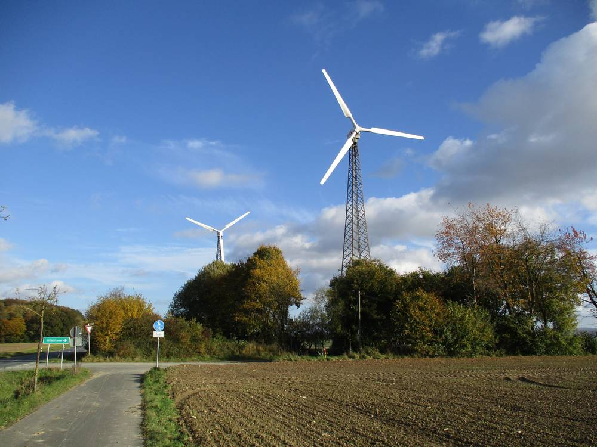
스코틀랜드 주민 70%가 공공건물·신축 주택 태양광 확대 찬성, 반대는 6%…집 근처 태양광 단지도 찬성 43%로 반대의 두 배
솔라에너지스코틀랜드 의뢰 여론조사, 하고 싶어도 못 단다는 응답 38%…스코틀랜드 정부는 공동체 재생에너지 지원 1,500만 파운드로 늘려
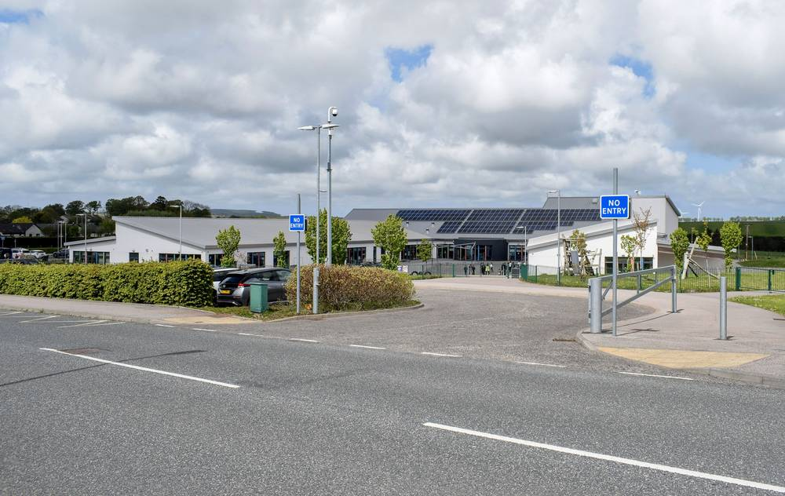
市民エネルギー·太陽光所得村
【釜山型太陽光所得②】企業PPAでは収益率2%台…「釜山市が電気を買い、排出権費用を節約」
釜山研究院「固定価格の上限150ウォン未満、駐車場の太陽光は145ウォンで売れば元本も回収できない」 / 釜山市の排出権購入費は7億ウォン台から20億ウォン超に…市がPPA購入者になれば内部収益率5%超 / 電力取引所「直接PPAの300kW以上高圧要件の緩和を検討」 / 自由討論で「協同組合に任せて」…送電線1.4km・部署の縦割りを指摘
【釜山型太陽光所得①】公共用地10MWに市民45億ウォン…2027年1月に試験公募
釜山市が17日、旧市長公館トモホン（道母軒）でエネルギー新産業協業ネットワークフォーラム / 2030年まで毎年2.5MW、事業費150億ウォンのうち市民30%・PF 70% / 釜山テクノパーク「政府の太陽光所得村は80%が条件付き選定…用地・販路・資金・信頼をワンストップで支援」
高興郡「10GWエネルギー大転換、収益は郡民エネルギー年金に」…世界太陽光発電会議で公共主導の営農型1GW・陽光所得村構想を公開
16～19日の大田での会議に広報館…住民が提案した345kV送電線の国家計画反映を推進、洋上風力予備地区の指定も準備
江原・高城の第1号「太陽光所得村」長新1里400kW、来月完工…年8,129万ウォンの収入見込み
第2号の禾谷里993.3kW・16億5,000万ウォンは今月現地評価、郡は公約の15カ所を目標に屹1里など13カ所の候補地を点検
平昌郡、公共主導の陸上風力200MWで「風の年金」へ第一歩…18日に東西発電・江原開発公社と協約
芳林・道沙里・興亭の3団地、郡の持分配当と超過利益で利益共有基金を造成…1人当たり還元額・支給方式は未定
江原道の境界地域4郡「軍の遊休地・日差し・水でエネルギー連帯を」…営農型太陽光の郡民ファンド、発電収益を基本所得に
鉄原・華川・楊口・麟蹄の政策フォーラム…「鉄原の農地の6割は外部所有、発電収益が外へ流出」、鉄原の太陽光と華川の揚水発電を結ぶ「境界地域エネルギー協力圏」構想
南オーストラリアの集合住宅住民にも「共同太陽光・蓄電池」…連邦・州政府が1,780万豪ドル支援、設置費の半額補助と残りは無利子融資
「StrataCharge」事業、1物件あたり補助金・融資それぞれ最大4万7,500豪ドル…所有者も賃借人も電気料金を節約、南オーストラリアでは12人に1人が区分所有建物に居住
米国・カナダの先住民5万世帯に太陽光と蓄電池…先住民の非営利団体が25億ドルの募金へ
Indigenized Energyとグローバル・シチズンの共同キャンペーン、2027年に最初の事業を目指す…「共同体所有」のエネルギーを強調
清州の17村が「日差し所得村」第3次公募に申請…太陽光1万6,082kW・設置費236億ウォン
第1・2次で選ばれた4村は事業化準備…清州市「系統連系がカギ、12月の小規模公益型優先接続に期待」
京畿道の公共RE100太陽光、3年間で稼働停止1,914日…「RE100所得村」は3市郡に58.8%集中
池英一京畿道議員が行政監査で「設置より生産」の成果管理を要求…住宅太陽光は目標10万世帯の49.3%
済州のイ・チャンフム初代気候経済副知事「風と日差しの利益を道民の所得に」…住民参加型事業を道民ファンドへ拡大
2035年炭素中立目標、約2GWの楸子洋上風力を最優先…新規発電事業に住民が債券・ファンドで投資、共有化基金は脆弱層・共同体の財源に
米アナーバー市の公営「持続可能エネルギー・ユーティリティ」、低所得世帯まで拡大…2027年に市全域へ開放
ブライアント地区の90余世帯に屋根置き太陽光と蓄電池を設置したパイロット事業の次の段階、新たに20カ所設置
全南光州市議会「系統につなげない太陽光は希望拷問」…ひだまり所得村126カ所のうち即時接続できるのは5カ所だけ
シン・ミンホ議員がエネルギー産業本部の行政監査で指摘…霊光・月坪村の1MWに18億ウォン投じたが収益ゼロ、「小規模農家優先・住民の均等参加を保障すべき」
独バイエルン州イーゼンの市民風力協同組合、組合員470人・出資金80万ユーロ…「着工は数年後、今は準備段階」
「市民エネルギー・イーゼンタール」が経験共有イベント…住民所有の風車7基を運営するフクスタールの元村長「お金が村に残る」
イタリア・サヴォーナ市、リグーリアの「連帯型再生可能エネルギー共同体」に参加…市が電力を生産・消費する「プロシューマー」に、恩恵は脆弱世帯へ
市執行委員会の承認を経て市議会の採決を残す…共同体の収益をエネルギー貧困世帯の支援に回す「CERSリグーリア」、気候行動計画（SECAP）の課題の一つ
米ミネソタの電力協同組合クロウ・ウィング・パワー、組合員に約300万ドルを還元…11月の電気料金から差し引き
2010年分の出資配当111万1,000ドルに、卸売協同組合が割り当てた1992～1998年分182万7,000ドルを加える
モヘッのヘッサルグリーン協同組合、商業運転の太陽光1,427カ所・176.1MW…1カ月で46カ所増
組合員の投資金3,497億5,000万ウォンのうち出資金は15億2,700万ウォン…10月の発電売上はSMP下落で6.8％減
米ラッパハノック族、旧首都跡の教育施設に屋根置き太陽光…先住民企業が助成申請から設置まで無償で
12.32kW・パネル28枚、稼働後約2MWhを発電…費用は「部族太陽光加速基金」から
「水原ひだまり発電」の青写真…公営駐車場13カ所5MWから20MW・328億ウォン、公共の配当は気候対応基金に
水原市・水原都市公社・エネルギー協同組合が参加、市民ファンドで利益分配…16日に市議会で設立説明会
横城郡の日差し所得村が5カ所に…下垈里・龍屯里に続き鶴谷1里・三巨里・梅日2里が2次選定
下垈里は住民協同組合が1MWの太陽光を推進、1次の「即時着手」9カ所に…郡は説明会・組合設立・系統協議を支援
全南光州市議会「日差し所得村は選定後こそ重要」…緑色エネルギー研究院に竣工後の技術・経営支援を要求
朴元鍾エネルギー産業山林委員長が行政監査で指摘…研究院「会計法人とAI精算システムを導入中」
カナダ・カルガリーの電気・ガス小売会社、利益の100％を地域の性的少数者団体へ…「料金が共同体の基金に」
社会的企業Q-TILITIES、代表は無給で5年以内に10万ドル以上の還元目標
ドイツ・ザーベックの住民エネルギー協同組合、1年で組合員380人→574人…新風力に300万ユーロ
建設中のジニンゲン・ミッデンドルフの風力タービンに住民資金が集中…組合資産も大きく拡大
英政府支援の「ネットゼロ・ハブ」「地域エネルギーは住民がエネルギーの主人になること」
イングランドの5ハブのうち北東部・ヨークシャーの責任者「収益は地域に残り、住民が一つになる」
スペイン・サンタポラ市、学校と体育館の屋根200kWで地域エネルギー共同体を発足…住民・商店200カ所の電力を最大半分まかなう
年30万kWh超を生産、発電地点から半径5km以内なら参加可能…電気協同組合グループが事業を支援
ドイツの組合員4万2,000人のエネルギー協同組合プロコンに通信会社も出資…1,266口・6万3,300ユーロ、「配当も再出資」
アミバ運営のSTROTH Telecomが組合員に…「持分数に関係なく1人1票の民主的な仕組みにひかれた」
インドネシア「村の太陽光100GW」に協同組合8万カ所を動員…実際の稼働は1％、「上から作った器だけの組合」と懸念
3年で100GW・約710億ドルの計画…過去の村の太陽光は管理主体がなく「壊れた記念碑」に
ドイツのエネルギー協同組合、女性組合員が少ない…研究所IÖW「参加のハードルを下げれば市民エネルギーはもっと強くなる」、ブレーメンの「女性監査役プログラム」など事例を提示
連邦経済エネルギー省が支援するEPOS研究の政策提言書…分かりやすい言葉、ハイブリッド会議、ボランティア活動の休止容認などを勧告
韓国政府「条件付き選定のひなた所得村も事業化を支援」…ESS構築事業を11月公告、1MW以下の住民参加型太陽光の系統優先接続を12月末施行
行政安全部・気候エネルギー環境部・農林畜産食品部が説明資料…「523カ所中すぐ着手できるのは36カ所」との指摘に、貯水池・備蓄農地・道路法面など遊休国公有地の提供を継続
水原の2つのエネルギー協同組合、市・市民が共に出資する「水原ひなた発電（株）」の設立説明会を16日に開催…2027年上半期の設立目標
12～25日に組合員週間、京畿ひなた自転車道1号・始華湖潮力発電所を見学…太陽光収益と連動し都市林づくりに1,300万ウォン寄付
全南光州の「日差し所得村」126カ所、蓄電池の条件で住民の初期負担重く…イ・ジェチャン市議「廃道・堤防・鉄道周辺まで用地を広げ、住民負担を下げよ」
統合特別市議会の行政監査で道路沿い太陽光など新たな用地の発掘を要求…エネルギー産業本部「仮想発電所事業者を指定し村と協議」
豪シドニーの配電会社、工場・倉庫の屋根の太陽光の余剰電力を賃借人・集合住宅住民と分け合う「コミュニティ電力網」モデル事業にエネルギーマップを公開
オースグリッド、マスコット＝ボタニー・カリンバ・セントラルコースト北部の3地域で接続余力・出力抑制データを公開し太陽光・蓄電池の適地を案内…コミュニティ蓄電池で利益も地域に還元
雪国・長岡で市民65人が「市民共同発電所」…出資金で屋根や農地の上に太陽光、収益は出資者へ
2023年設立の一般社団法人「ながおか自然エネルギー」、学校への出前授業や小水力体験も…「年間日射量は関東の約8割」
米フロリダ州オカラ市営電力の「コミュニティ太陽光サブスク」、6年で廃止へ…最大加入者が抜け17MWのうち2%も残らず
太陽光を使う分だけkWh当たり1.6セント上乗せする方式、住宅の加入は「わずか」…市議会17日採決、12月1日から新規受付停止
イタリア・ヴァルサモッジャの再エネ共同体、25世帯の「共同購入」で太陽光・ヒートポンプを一緒に設置…欧州委「手本となるパイロット事例」
市民・小規模事業者102人の協同組合、2024年発足後に太陽光200kW超を設置…ボランティアが戸別訪問、説明会4回に75人
イタリア・トルトーナに科学技術パーク主導の再エネ共同体…「参加者の電気料金を25～40%削減」
最初の発電所は約200kWで始め750kWまで拡大…トルトーナ一帯の18のコムーネが対象、2026年末の稼働目標
英シェトランド「捨てられる風力の電気で島民の電気料金を下げる」…議会主導の「シェトランド・コミュニティ電力プロジェクト」始動
世帯の40%がエネルギー貧困なのに、103基のバイキング風力は送電が詰まり停止することも…GBエナジー・Ofgem・SSEなどが作業部会に参加、2028年から試行事業を目標
ニューヨーク市に「市営の再エネ開発公社」を…市民団体の報告書「公共蓄電池200MWだけで料金を年1億7,000万ドル削減」
気候・公共電力の3団体が「PowerNYC」を提案…学校・病院・公営住宅の屋根に太陽光・蓄電池・地域熱網を直接開発し、収益を再投資する自立型の公共開発者
スコットランドの送電会社による500万ポンドの「ネットゼロ基金」、住民主導の26事業の支援を完了…「1ポンドで社会的価値2.85ポンド」
SPエナジー・ネットワークスの基金、中部・南部のコミュニティ建物の断熱・低炭素暖房・環境配慮型交通を支援…ワークショップ32回に450人超、22団体に専門助言、CO2を2万5,000トン以上削減
独ペルレベルクの2村の住民が「太陽光団地に反対」…拘束力のない住民意見調査でも開発会社が41ヘクタール計画を断念
デルゲンティンは11人中反対8・棄権3、ジューコウは35人中賛成10・反対19…同じ郡のシルデでも9月の調査で8割近くが反対
独バイエルン・オーバーラントの市民財団20年…郡の補助1ユーロを18ユーロの事業に、それでも「2035年再エネ100%への道は遠い」
ミースバッハ郡の再エネ比率は電力60%、熱25%・交通7%にとどまる…年間エネルギー費4億9,500万ユーロのうち3億500万ユーロが地域外へ
独ケルン・オッセンドルフ、エネルギー協同組合と住宅協同組合が435世帯に賃借人向け太陽光…蓄電池670kWhで電気料金を約10%安く
建物55棟の屋根に750kW、団地の電力の約半分を屋根から…協同組合「2027年のEEG改正で小規模な賃借人電力は建てられなくなる」
送電網の不足で条件付き選定の和順・水洞村、1MWの太陽光所得村を蓄電池で系統接続へ…設置・運営費は民間の統合発電所事業者が負担
49世帯の住民全員が同意した事業…気候エネルギー環境相が11日に現地点検、今週中に太陽光所得村ESS事業者を公募
米デラウェア、商業ビル8棟の屋根に19MW超のコミュニティ太陽光…家や屋根がなくても割引電力を利用
不動産開発会社と太陽光企業が協力、ニューキャッスル郡のデルマーバ電力供給区域…3カ所は州の許認可迅速化の対象
公共が先導する済州・羅州のエネルギー転換…風力共有化基金・羅州型太陽光年金で利益を分け合うも電力網の飽和が課題
済州エネルギー公社が風力59.53MWを運営・翰林洋上風力では住民1,009人が1人年351万ウォン…羅州では許可を得ても建てられない太陽光約2,700カ所
南原の9村が太陽光所得村に条件付き選定…市議会の研究団体「次は事業化」、用地発掘・自己負担支援など5大課題を議論
驪州・九陽里と完州・西峰村の事例を共有…発電収益で無料の昼食・幸福バス、70歳以上に月5万ウォンの敬老年金
淳昌郡、公有財産の用地に「太陽光所得村」100カ所…全北開発公社・韓電と公共主導型発電で協約
2030年までの5年間で用地を共同発掘、開発公社が投資・建設・運営…12月に条例制定、来年1月に住民説明会
米ジョージア州の組合員所有の電力協同組合コースタル・エレクトリック、余剰利益153万ドルを組合員に返す
2011〜2013年に電気を使った組合員が対象…これまで返した出資配当は2,300万ドル超、組合員は2万人余り
米カリフォルニアのソボバ先住民部族の消防署、太陽光マイクログリッドにバナジウムフロー電池を追加し停電時も10時間以上持ちこたえる
GRIDオルタナティブズが州エネルギー委員会の支援で開発…山火事の最高危険地域、24時間を超える停電も経験
メキシコ・プエブラの農民、研究所と畑の上の太陽光コミュニティ実験…5kWモジュールで肥料工場・加工・3世帯に電気
サンティアゴ・ハリツィントラ村のトナティウ事業…決定は村の総会で、発電した電気を複数の家に分ける方法はまだ課題
EU、市民主導のエネルギー共同体10団体に初のガバナンス革新賞…賞金総額100万ユーロ
6カ国10団体を選出…スペインのマンサ・エネルヒア（만사 에네르히아）が最高額の35万ユーロ
オランダのクラリンガーポルダー熱協同組合、地熱プロジェクトADLと熱供給契約に署名…2029年第4四半期の供給を目指す
熱容量25MWthの地熱源、初の掘削は2028年半ばに計画…温室農家と建物に熱を供給
イタリア・バーリ都市圏初の再生可能エネルギー共同体「チェル・ノーヴァ」が発足…都市圏は学校施設の電力消費で参加
都市圏市長とジョイア・デル・コッレ市長が設立証書に署名、市民・中小企業・第三セクター団体も創設メンバーに
スペイン・バスクのオンダリビア市、地域エネルギー共同体づくりに向けた住民説明会を3回開く
11月18日、12月10日・16日の午後6時…構成方法・組織・設立手続きを順に議論、市「住民の意思次第」
スコットランドのSSENトランスミッション、送電設備近くの住民に162万ポンドの地域基金の設計について意見を求める
レアーグ・ロガート住民対象のアンケートは11月16日〜12月14日、説明会3回…「サウス・ロッホ・シン地域基金」は2027年開始予定
「日差し所得村」選定436カ所のうち、すぐ着手できるのは23カ所…河川区域・韓電の系統・「洞」の名称が壁に
政府は今年700カ所の選定を目標に加速…自治体の規制と送電網不足で現場は止まっている
スコットランド住民の10人に7人「学校・公共施設の屋根に太陽光を」…反対は6%
業界団体の世論調査、新築住宅の太陽光義務化に賛成59%・自宅近くの太陽光発電所は賛成43%対反対22%…「政府・自治体は行動に移すべき」
英ナショナル・グリッド、ブライス変電所の増設地域に最大106万ポンドのコミュニティー基金…使い道は住民の意見を聞いて決める
データセンターとバーウィック・バンク洋上風力をつなぐ変電所の第1・2段階に53万ポンドずつ、12月6日まで4週間の意見募集…基金は来年夏に始動
韓国「日差し所得村」選定522カ所のうち490カ所が「条件付き」…国会予算委で「着工はほぼゼロ、ブローカーが住民を押しのける恐れ」
2027年度予算案審査の全体会議、来年2,200カ所に拡大する計画に予算は利子補給285億ウォン中心…営農型太陽光の150億ウォンも研究・制度基盤に偏ると指摘
英サウスケンブリッジシャー、今年は住民の気候事業14件に17万1,000ポンド…村の集会所の太陽光や芸術センターのヒートポンプを支援
2019年から住民事業110件に100万ポンド超を支援してきた「ゼロカーボン・コミュニティー」基金…申請団体は23から37に増加
英シェトランドの住民アンケート、回答者の87％が「エネルギー開発の停止か一時凍結を」…2,655人が回答
開発反対団体「サステナブル・シェトランド」が全世帯に配布…「すでに英国の再エネに大きく貢献」が80％超、送電線の地中化に賛成が85％近く
環境法団体クライアントアース、ブルガリアとクロアチアをEU欧州委員会に申し立て…「市民エネルギー共同体を阻む規則」
クロアチアで正式登録された市民エネルギー共同体は3つだけ、うち1つは事実上停止…7月のポーランド・ハンガリーに続きEU再エネ指令の履行を問う
龍仁市政研究院「半導体のRE100需要を市民の所得に」…市民投資・住民参加・公共資産太陽光を盛り込んだ利益共有モデルを提案
イシューリポート「YRI Insight 119号」…発電収益の共有、施工・保守への住民参加、政策金融と市民投資の連携、隣接市郡との広域協力など5つの方策
韓国の信用協同組合「信協」、市民太陽光から洋上風力・「日差し所得村」まで再エネ金融を拡大…村の発電施設資金を最大85％融資
安山市民太陽光発電協同組合の発電所60カ所建設を支えた経験を生かし、高敞洋上風力に1,000億ウォンの連携融資、エネルギー公団の利子補給で村の負担軽減
ドイツ・メーネゼーの風力事業者、収益を分かち合う市民・エネルギー財団を計画…議会は運営委員会の同数構成をまず定款に明記するよう要求
ノルトライン＝ヴェストファーレン州法が定める住民の利益参加の方式をめぐり1年で議会の決定が覆る…財団案が本当に住民を参加させるのか疑問も
スコットランド住民の70％が公共施設・新築住宅への太陽光拡大に賛成、反対は6％…自宅近くの太陽光発電所も賛成43％で反対の2倍
ソーラー・エナジー・スコットランド委託の世論調査、設置したくてもできないとの回答38％…スコットランド政府は地域再エネ支援を1,500万ポンドに増額
市民能源·阳光收入村
【釜山型阳光收入②】仅靠企业PPA收益率2%左右…"由釜山市购电，节省排放权费用"
釜山研究院："固定价格上限低于150韩元，停车场光伏以145韩元出售连本金都收不回" / 釜山市排放权购买费从7亿增至20亿韩元以上…市政府成为PPA买方则内部收益率超过5% / 电力交易所："研究放宽直接PPA的300kW以上高压条件" / 自由讨论："交给合作社吧"…指出1.4公里线路缺口与部门壁垒
【釜山型阳光收入①】公共用地10MW，市民出资45亿韩元…2027年1月启动试点招募
釜山市17日在原市长官邸道母轩举办能源新产业协作网络论坛 / 2030年前每年2.5MW，150亿韩元项目费中市民30%、项目融资70% / 釜山科技园："政府阳光收入村80%为有条件入选…将一站式支持场地、销路、资金和信任"
高兴郡：“10GW能源大转型，收益变成郡民能源年金”…在世界光伏大会公开公共主导农光互补1GW和阳光收入村构想
16日至19日在大田大会设宣传馆…推动把居民提议的345kV输电线路纳入国家规划，并准备申请海上风电预备区
江原高城首个“阳光收入村”长新1里400kW下月竣工…预计年收入8,129万韩元
第2号禾谷里993.3kW、16.5亿韩元项目本月现场评估，郡政府以承诺的15处为目标，正在考察屹1里等13处候选地
平昌郡以公共主导的200MW陆上风电迈出“风力年金”第一步…18日与东西发电、江原开发公社签约
芳林、道沙里、兴亭3个风电场，以郡持股分红和超额收益设立利益共享基金…人均返还额与发放方式尚未确定
江原道边境四郡：以军队闲置用地、阳光和水资源结成“能源联盟”…提议设立农光互补郡民基金、发电收益转为基本收入
铁原、华川、杨口、麟蹄政策论坛…“铁原60%农地归外地人所有，发电收益外流”，提出连接铁原光伏与华川抽水蓄能的“边境地区能源合作圈”
南澳公寓居民也能用上“共享光伏和电池”…联邦与州政府拨款1,780万澳元，补贴一半安装费、其余提供无息贷款
“StrataCharge”计划每处物业补贴与贷款各最高4万7,500澳元…业主和租户都能节省电费，南澳每12人中就有1人住在分层产权建筑
为美国和加拿大5万户原住民家庭安装光伏和电池…原住民非营利组织启动25亿美元募资
Indigenized Energy与全球公民联合发起，目标2027年启动首批项目，强调“社区所有”的能源
京畿道公共RE100光伏三年停运1,914天…“RE100收入村”58.8%集中在3个市郡
京畿道议员池英一在行政监察中要求“重发电而非重安装”的绩效管理；户用光伏仅完成10万户目标的49.3%
济州首任气候经济副知事李昌钦：“让风和阳光的收益成为道民收入”…把居民参与型项目扩大为道民基金
以2035年碳中和为目标，优先推进约2吉瓦楸子海上风电…新发电项目由居民以债券、基金投资，共享基金用于弱势群体和社区
全南光州市议会："接不上电网的光伏是希望折磨"…126个阳光收入村中能立即并网的仅5个
申珉浩议员在能源产业本部行政监察中指出：灵光月坪村1MW电站投入18亿韩元却零收益，"应优先小农户、保障居民平等参与"
德国巴伐利亚伊森市民风电合作社：成员470人、出资80万欧元…"开工还要几年，现在是准备阶段"
"伊森塔尔市民能源"举办经验分享会…运营7台居民所有风机的富克斯塔尔前镇长："钱留在村里"
意大利萨沃纳市加入利古里亚“团结型可再生能源社区”…市政府成为发电又用电的“产消者”，收益惠及弱势家庭
经市执行委员会批准，尚待市议会表决…“CERS利古里亚”把社区收益用于帮助能源贫困家庭，属于气候行动计划（SECAP）任务之一
“水原阳光发电”蓝图出炉…从13处公营停车场5MW起步，规模20MW、328亿韩元，公共分红纳入气候应对基金
水原市、水原城市公社与能源合作社参与，以市民基金分享收益…16日在市议会举行创立说明会
韩国横城郡"阳光收入村"增至5个…继下垈里、龙屯里之后，鹤谷1里、三巨里、梅日2里第二批入选
下垈里由居民合作社推进1MW光伏，跻身首批全国9个"立即开工"村…郡政府支援说明会、合作社设立和并网协商
德国拥有4.2万名社员的能源合作社Prokon迎来电信企业入股…1,266股、6.33万欧元，“分红也继续入股”
Amiva运营商STROTH Telecom成为社员…“看重不论股数多少一人一票的民主结构”
印尼“乡村太阳能100GW”动员8万家合作社…实际运营仅1%，被批“自上而下的空壳合作社”
计划3年内建成100GW、耗资约710亿美元…过去的乡村太阳能因缺乏管理主体沦为“破碎的纪念碑”
德国能源合作社女性社员偏少——研究机构IÖW称“降低参与门槛，市民能源将更强大”，并介绍不来梅“女性监事计划”等案例
德国联邦经济和能源部资助的EPOS研究政策建议书：建议使用通俗语言、混合式会议、允许志愿服务中途暂停等
韩国政府称“附条件入选的阳光收入村也将支持落地”：储能建设项目11月招标，1MW以下居民参与型太阳能电网优先接入12月底实施
行政安全部、气候能源环境部、农林畜产食品部发布说明材料，回应“523个村仅36个可立即开工”的批评，将继续提供水库、储备农地、道路边坡等闲置国有和公有土地
水原两家能源合作社16日举办市政府与市民共同参与的“水原阳光发电株式会社”成立说明会，目标2027年上半年设立
12至25日举办社员周，参观京畿阳光自行车道1号和始华湖潮汐发电站；结合太阳能收益向城市森林捐款1,300万韩元
全南光州126个"阳光收入村"因储能条件背负沉重初期负担…市议员李在昌："把用地扩大到废弃道路、堤坝和铁路周边，降低居民负担"
统合特别市议会行政监察中要求开发道路沿线太阳能等新用地…能源产业本部："将指定虚拟电厂运营商与村庄协商"
澳大利亚悉尼配电公司公布能源地图，助推将工厂仓库屋顶太阳能余电分享给租户和公寓居民的"社区电力网"试点
Ausgrid公开马斯科特-博塔尼、卡林巴、中央海岸北部三地的接入余量与限电数据，指引太阳能和电池选址…借助社区电池让收益惠及当地
日本雪国长冈65名市民建“市民共同发电所”…以出资在屋顶和农田上方装太阳能，收益回馈出资者
2023年成立的一般社团法人“长冈自然能源”，还到学校上课、开展小水电体验…“年日照量约为关东的80%”
美国佛罗里达州奥卡拉市营电力"社区光伏订阅"6年后将终止…最大用户退出后，17MW中订阅不足2%
按使用的光伏电量每千瓦时多付1.6美分，住宅用户参与"微乎其微"…市议会17日表决，12月1日起停止新用户加入
意大利瓦尔萨莫贾可再生能源社区组织25户"团购"共同安装光伏和热泵…欧盟委员会："值得借鉴的试点案例"
由102名市民和小商户组成的合作社，2024年成立后已安装光伏200kW以上…志愿者挨家挨户上门，4场说明会吸引75人
英国设得兰"用弃风电力降低岛民电费"…议会主导的"设得兰社区电力项目"启动
40%家庭陷入能源贫困，拥有103台风机的维京风电场却因输电受阻时常停机…GB能源、Ofgem、SSE等加入工作组，目标2028年起开展试点
为纽约市设立"市属可再生能源开发公司"…民间团体报告称"仅建200兆瓦公共电池即可每年节省电费1.7亿美元"
三家气候与公共电力团体提出"PowerNYC"…在学校、医院和公共住房屋顶直接开发光伏、储能和区域热网，以收益再投资的自立型公共开发商
苏格兰输电公司500万英镑"净零基金"完成资助26个社区主导项目…"每投入1英镑产生2.85英镑社会价值"
SP能源网络基金支持中部和南部社区建筑保温、低碳供暖和绿色交通…32场研讨会450余人参加，22个团体获专业咨询，减排二氧化碳逾2.5万吨
德国佩勒贝格两村居民"反对光伏园区"…意见调查虽无约束力，开发商仍放弃41公顷计划
德根廷11人中8人反对、3人弃权，聚科35人中10人赞成、19人反对…同县席尔德9月调查也有近八成反对
德国巴伐利亚奥伯兰公民基金会20年：县里1欧元变成18欧元的事业，但"2035年可再生能源100%仍路途遥远"
米斯巴赫县电力可再生比例60%，供热仅25%、交通7%…每年4.95亿欧元能源支出中有3.05亿欧元流出本地
德国科隆奥森多夫，能源合作社与住房合作社为435户租户建屋顶光伏…配670kWh储能，电费便宜约10%
55栋楼屋顶共750kW，小区约一半用电来自屋顶…合作社警告：2027年EEG修订后小型租户电力项目将无法建设
因电网受限附条件入选的和顺水洞村1MW阳光收入村，将借储能装置接入电网，安装和运营费用由民间虚拟电厂运营商承担
49户居民全体同意的项目；气候能源环境部长官11日现场检查，本周内公开招募阳光收入村储能项目运营商
公共部门引领的济州、罗州能源转型：以风电共有化基金和罗州型阳光年金分享收益，但电网饱和成难题
济州能源公社运营风电59.53MW，翰林海上风电1,009名居民人均年获351万韩元；罗州获许可却无法开工的光伏约2,700处
南原9个村附条件入选阳光收入村，市议会研究团体称“下一步是落地”，讨论用地发掘、自筹支持等五大课题
分享骊州九阳里、完州西峰村经验：用发电收益提供免费午餐、幸福巴士，70岁以上老人每月5万韩元敬老金
淳昌郡将在公有地上建设100个“阳光收入村”，与全北开发公社、韩电签署公共主导型发电协议
到2030年的5年间共同寻找用地，开发公社负责投资、建设和运营；12月制定条例，明年1月召开居民说明会
美国佐治亚州社员所有的电力合作社Coastal Electric向社员返还153万美元盈余
对象为2011~2013年用电的社员…迄今返还的资本信用超过2,300万美元，社员2万余人
美国加州索博巴原住民部落消防站在光伏微电网中加装钒液流电池，停电时可支撑10小时以上
GRID Alternatives在州能源委员会支持下开发…位于山火最高风险区，曾经历超过24小时的停电
墨西哥普埃布拉农民与研究所合作开展农田光伏社区实验…5kW模块为肥料厂、加工和三户农家供电
圣地亚哥哈利辛特拉村TONATIUH项目…决定在村民大会作出，如何把电分给多户家庭仍是课题
苏格兰SSEN输电公司就162万英镑地方基金设计征求输电设施附近居民意见
面向莱格、罗加特居民的问卷11月16日至12月14日开放，另有3场说明会…“南欣湖地方基金”预计2027年启动
苏格兰每10名居民中有7人支持"在学校和公共建筑屋顶装光伏"…反对仅6%
行业团体民调：59%支持新建住宅强制安装光伏，对家附近建光伏电站支持43%、反对22%…"政府和地方当局应付诸行动"
英国国家电网为布莱斯变电站扩建地区设立最高106万英镑社区基金，用途听取居民意见后决定
连接数据中心和伯威克滩海上风电的变电站一、二期各分配53万英镑，征求意见4周至12月6日，基金明年夏季启动
韩国"阳光收入村"入选522处中490处为"附条件"…国会预算委员会："几乎没有开工，中介可能把居民挤出去"
2027年度预算案审议全体会议：明年计划扩大至2,200处，预算却以285亿韩元贴息为主；农光互补150亿韩元也被指偏重研究与制度建设
英国南剑桥郡今年向14个居民气候项目拨款17.1万英镑…支持村会堂光伏和艺术中心热泵
“零碳社区”基金自2019年以来已资助110个居民项目逾100万英镑…申请团体由23个增至37个
英国设得兰居民问卷：87%受访者主张“暂停或冻结能源开发”…共2,655人作答
反开发团体“可持续设得兰”向全体住户发放问卷…逾80%认为“已对英国可再生能源作出重大贡献”，近85%支持输电线路入地
环境法律组织ClientEarth向欧盟委员会投诉保加利亚和克罗地亚：“规则阻碍公民能源社区”
克罗地亚正式登记的公民能源社区仅3个，其中1个已近乎停摆…继7月投诉波兰、匈牙利后，再追问欧盟可再生能源指令落实情况
龙仁市政研究院：“把半导体RE100需求转化为市民收入”…提出包含市民投资、居民参与和公共资产光伏的利益共享模式
专题报告《YRI Insight 第119期》…提出发电收益共享、居民参与施工与运维、政策性金融与市民投资联动、与邻近市郡广域合作等5项方案
韩国信用合作社“信协”将可再生能源金融从市民光伏扩展至海上风电和“阳光收入村”…村级发电设施资金最高可贷85%
凭借支持安山市民阳光发电合作社建成60座电站的经验，参与高敞海上风电1,000亿韩元联合贷款，能源公团贴息减轻村庄利息负担
德国默讷湖镇风电运营商筹建分享收益的市民与能源基金会…议会要求先把管理委员会对等组成写入章程
围绕北莱茵－威斯特法伦州法律规定的居民收益参与方式，议会决定一年内反转…基金会方案能否真正让居民参与受到质疑
苏格兰70%居民支持在公共建筑和新建住宅扩大安装光伏，反对仅6%…家附近建光伏电站的支持率43%，是反对的两倍
苏格兰太阳能协会委托民调显示38%想装却装不了…苏格兰政府将社区可再生能源支持预算增至1,500万英镑
Citizen Energy·Sunlight Income Village
[Busan Sunlight Income ②] Corporate PPAs yield about 2%; researchers propose the city buy the power and save on emission allowances
Busan Development Institute: fixed-price cap below 150 won, parking-lot solar sold at 145 won cannot recover its principal / Busan City's allowance purchases rise from 700 million won to over 2 billion won; with the city as PPA buyer, IRR tops 5% / KPX: easing the 300kW high-voltage requirement for direct PPAs is under review / Open discussion: "Leave it to cooperatives"; 1.4km grid gap and departmental silos raised
[Busan Sunlight Income ①] 10MW on public land with 4.5 billion won from citizens; pilot call opens January 2027
Busan City holds Energy New Industry Collaboration Network Forum at Domoheon, the former mayor's residence, on Nov. 17 / 2.5MW a year through 2030, 30% of the 15 billion won from citizens and 70% project finance / Busan Techno Park: "80% of government Sunlight Income Villages were selected only conditionally; one-stop support for sites, buyers, financing and trust"
Goheung County Pledges 10 GW Energy Shift with Revenue Paid as a Residents' Energy Pension, Unveils 1 GW Public-Led Agrivoltaics Plan at World Solar Conference
Booth at the 16–19 November conference in Daejeon — county seeks to put a resident-proposed 345 kV line into the national grid plan and prepares an offshore wind zone bid
Goseong's first sunlight income village, Jangsin 1-ri, to complete 400kW plant next month with expected income of 81.29 million won a year
Second village, Hwagok-ri (993.3kW, 1.65 billion won), faces on-site evaluation this month; county inspects 13 candidate sites toward its pledge of 15 villages
Pyeongchang takes first step toward a 'wind pension' with 200MW of publicly led onshore wind; agreement with EWP and Gangwon Development Corp. on the 18th
Three wind farms at Bangnim, Dosa-ri and Heungjeong; county dividends and excess profits to fund a benefit-sharing pool, but per-resident payouts and payment method are not yet set
Four Gangwon border counties urged to form an 'energy alliance' of idle military land, sun and water, with a citizens' agrivoltaics fund paying a basic income
Cheorwon-Hwacheon-Yanggu-Inje policy forum: '60% of Cheorwon farmland is owned by outsiders, so power profits leak out'; proposal for a border-region energy zone linking Cheorwon solar and Hwacheon pumped storage
South Australian apartment residents to get shared solar and batteries: A$17.8 million federal-state package covers half the cost with grants, the rest with zero-interest loans
Under the StrataCharge program, grants and loans are each capped at A$47,500 per property; owner-occupiers and tenants both save on bills, and one in 12 South Australians lives in strata
Indigenous nonprofit seeks $2.5 billion to bring solar and batteries to 50,000 homes in US and Canada
Joint campaign by Indigenized Energy and Global Citizen aims for first projects in 2027, stressing community-owned energy
17 Cheongju villages apply in third round of 'Sunlight Income Village' program: 16,082kW of solar, 23.6 billion won
Four villages chosen in earlier rounds are preparing projects; city says grid access is key and pins hopes on December priority-connection rule
Gyeonggi public RE100 solar sat idle 1,914 days in three years; 58.8% of 'RE100 income villages' in three counties
Provincial councillor Ji Young-il calls for output-based performance management in audit; home solar at 49.3% of 100,000-household goal
Jeju's first climate-economy vice governor: 'Turn wind and sun into residents' income' with a province-wide citizens' fund
Aiming for carbon neutrality by 2035 with the ~2 GW Chuja offshore wind farm as top priority; residents to invest via bonds and funds, shared fund to support vulnerable households and communities
Ann Arbor's municipal Sustainable Energy Utility expands to income-eligible households, aims to open citywide in 2027
Next phase of the pilot that put rooftop solar and batteries on more than 90 Bryant-area homes; 20 new installations coming
South Jeolla-Gwangju councillor: solar without grid access is "false hope" — only 5 of 126 sunlight income villages can connect now
Councillor Shin Min-ho tells audit that a 1 MW plant in Yeonggwang's Wolpyeong village cost 1.8 billion won but has earned nothing; calls for small farmers first and equal resident participation
Bavarian village wind cooperative in Isen reaches 470 members and €800,000: 'Construction is years away; we are preparing'
Bürgerenergie Isental hosts experience evening; former Fuchstal mayor, whose community runs seven citizen-owned turbines, says 'the money stays in the village'
Italy's Savona joins Liguria's 'solidarity renewable energy community' as a prosumer, with benefits directed to vulnerable households
Approved by the city executive, pending a city council vote; CERS Liguria channels community income to families in energy poverty, part of the city's climate action plan (SECAP)
Minnesota electric co-op Crow Wing Power returns almost $3 million to members as credit on November bills
About $1.111 million in 2010 capital credits plus $1.827 million assigned for 1992-1998 by its former wholesale co-op
Mohaet's Haetsal Green cooperative reaches 1,427 operating solar plants and 176.1MW, up 46 in a month
Of 349.75 billion won raised from members, only 1.527 billion won is equity; October power sales fall 6.8% as SMP drops
Rappahannock Tribe puts rooftop solar on education lodge at its ancestral capital — Native-owned firm handled grants to installation at no cost
A 12.32 kW, 28-panel system has produced nearly 2 MWh since start-up; funding came from a tribal solar accelerator fund
Suwon Haetbit Power takes shape: 5MW on 13 public car parks first, 20MW and 32.8 billion won in total, with public dividends going to a climate fund
City, Suwon Urban Corporation and energy co-ops join; citizens share profits through a fund — founding briefing at city council on Nov. 16
Hoengseong County now has five sunlight income villages as three more join in second round
In Hadae-ri a residents' cooperative is pursuing a 1MW solar plant and was among nine villages nationwide cleared for immediate start; county supports briefings, co-op set-up and grid talks
South Jeolla-Gwangju council: Sunlight income villages need support after selection, not just at launch
Committee chair urges green energy institute to back villages with technical and management help after completion; institute cites AI-based accounting system
Calgary power and gas retailer gives 100% of profits to local LGBTQ+ groups: 'bills become a community fund'
Social enterprise Q-TILITIES: founder takes no salary and aims to give back at least $100,000 within five years
Imsil launches 'energy zone' committee for 150 MW of solar to boost residents' income — some call for an action plan first
About 150 attend a 288-seat launch; choosing between a renewables cluster and a distributed-energy zone, plus land and grid access, are the hurdles
German village energy co-op in Saerbeck grows from 380 to 574 members in a year, raises 3 million euros for new wind
Residents pour money into turbines under construction at Sinningen and Middendorf as the co-op's assets climb
UK's government-backed Net Zero Hub: community energy lets people 'take ownership of energy'
Head of the North East & Yorkshire hub, one of five in England, says benefits stay local and bring people together
Spain's Santa Pola launches local energy community with 200kW on school and sports hall roofs, covering up to half the power of 200 homes and shops
Over 300,000kWh a year, open to consumers within 5km of the panels; an electricity cooperative group supported the project
Telecom firm joins German energy co-op Prokon, which has 42,000 members, with 1,266 shares worth €63,300
STROTH Telecom, the company behind Amiva, says the one-member-one-vote model won it over and will reinvest dividends
Indonesia enlists 80,000 cooperatives for 100GW village solar, but only 1% operate as critics warn of 'top-down shells'
A three-year, roughly US$71bn plan follows earlier village systems that became 'broken monuments' for lack of an operator
Too few women in Germany's energy cooperatives, says IÖW: lowering barriers would make citizen energy stronger, with Bremen's 'women supervisory board programme' among examples
Policy paper from the federally funded EPOS project recommends plain language, hybrid meetings and allowing breaks from volunteering
Korea says conditionally selected Sunlight Income Villages will get help to break ground; storage scheme to be tendered in November, grid priority for resident solar under 1MW from end-December
Interior, climate and agriculture ministries respond to report that only 36 of 523 villages can start at once, pledge more idle public land such as reservoirs, reserve farmland and road slopes
Two Suwon energy cooperatives to brief public on Nov. 16 on 'Suwon Haetbit Power', a city-citizen joint company targeted for early 2027
Members' fortnight runs Nov. 12–25 with visits to a solar bike path and Sihwa Lake tidal plant; KRW 13 million from solar income donated to urban forest
126 'Sunshine Income Villages' in South Jeolla–Gwangju Face Heavy Upfront Costs From Storage Conditions; Councillor Calls for Sites on Disused Roads, Embankments and Rail Land
At an audit of the integrated city council, Lee Jae-chang urged new sites such as roadside solar; the energy bureau says it will appoint a virtual power plant operator to work with villages
Sydney Network Operator Publishes Energy Map for Trial Sharing Surplus Factory and Warehouse Rooftop Solar With Renters and Apartment Dwellers
Ausgrid releases connection capacity and curtailment data for Mascot-Botany, Caringbah and the Northern Central Coast to show where solar and batteries fit best, with community batteries spreading the benefits locally
19 Villages in Nine Gangwon Counties Apply for Third Round of Korea's "Sunlight Income Village" Program; Results Due in December
46 villages in the province were already selected in the first two rounds; ministry says third round will support more than 200 communities nationwide
In snowy Nagaoka, 65 citizens build 'citizen co-owned power plants' with solar on roofs and farmland, returning revenue to investors
The Nagaoka Natural Energy association, founded in 2023, also runs school classes and micro-hydro demos; annual sunshine is about 80% of the Kanto region's
Ocala, Florida, Moves to End Municipal Utility's Community Solar Subscription After Six Years as Less Than 2% of 17MW Remains Subscribed
Customers paid an extra 1.6 cents per kWh for solar and residential uptake was "negligible"; council votes Nov. 17, with new sign-ups closing Dec. 1
Italy's Valsamoggia Energy Community Organizes Group Purchase for 25 Households to Install Solar and Heat Pumps Together; European Commission Cites It as a Pilot Worth Following
Cooperative of 102 residents and small businesses has installed more than 200kW of solar since launching in 2024; volunteers went door to door, drawing 75 people to four meetings
Science Park in Tortona, Italy, Launches Renewable Energy Community, Projecting 25-40% Savings on Members' Bills
First plant of about 200kW to grow to 750kW, open to 18 municipalities around Tortona, with operation targeted by the end of 2026
Shetland Launches Council-Led "Community Power Project" to Turn Surplus Wind into Cheaper Electricity for Islanders
40% of households are in fuel poverty while the 103-turbine Viking wind farm is at times switched off by grid bottlenecks; GB Energy, Ofgem and SSE join working group aiming for trials from 2028
Advocates Urge New York City to Create a City-Owned Renewable Developer, Saying 200MW of Public Batteries Alone Could Save Ratepayers $170 Million a Year
Three climate and public power groups propose "PowerNYC" to build solar, storage and thermal energy networks on schools, hospitals and public housing, recycling revenue into new projects
Scottish Grid Operator's £5 Million Net Zero Fund Completes Support for 26 Community-Led Projects, Returning £2.85 in Social Value per £1
SP Energy Networks fund backed insulation, low-carbon heating and greener transport for community buildings in central and southern Scotland; 450+ people joined 32 workshops, 22 groups got expert advice, over 25,000 tonnes of CO2 saved
Residents of Two Villages Near Perleberg, Germany, Say No to Solar Parks; Developer Drops 41-Hectare Plan Despite Non-Binding Vote
In Dergenthin 8 of 11 opposed and 3 abstained; in Sükow 19 of 35 opposed and 10 supported. Nearby Schilde also voted close to 80% against in September
Bavaria's Oberland Citizens' Foundation at 20: Turning Each County Euro Into 18 Euros of Work, Yet "Still Far From 100% Renewables by 2035"
Miesbach county gets 60% of its electricity from renewables but only 25% of heat and 7% of transport; €305 million of its €495 million annual energy bill leaves the region
Cologne's Ossendorf: Energy and Housing Co-ops Bring Tenant Solar to 435 Households, With 670kWh of Storage Cutting Power Bills by About 10%
750kW on the roofs of 55 buildings supplies about half the estate's electricity; co-op warns 2027 EEG reform would make small tenant-power projects unviable
Hwasun's Sudong village, held back by grid limits, turns to battery storage to connect its 1MW Sunlight Income Village project, with private VPP operators paying for the batteries
All 49 households backed the project; climate minister inspects the site on Nov. 11 as the ministry prepares to tender ESS operators this week
Delaware: More Than 19MW of Community Solar Planned on Eight Commercial Rooftops, Offering Discounted Power to Residents Without Homes or Roofs of Their Own
Real estate developer and solar firm partner in New Castle County, Delmarva Power territory; three sites accepted into the state's permitting accelerator
Public-Led Energy Transitions in Jeju and Naju Share Gains Through a Wind Commons Fund and a 'Sunlight Pension,' but Grid Saturation Looms
Jeju Energy Corporation runs 59.53MW of wind; 1,009 residents earn about ₩3.51 million a year each from Hallim offshore wind; in Naju, some 2,700 licensed solar projects cannot be built
Nine Namwon Villages Conditionally Selected as Sunlight Income Villages; Council Study Group Says 'Now Make Them Real,' Weighs Five Tasks
Cases from Guyang-ri in Yeoju and Seobong village in Wanju shared: free lunches, a 'happiness bus' and pensions of ₩50,000 a month for residents over 70
Sunchang Plans 100 Sunlight Income Villages on County Land in Public-Led Solar Pact with Provincial Developer and KEPCO
Partners will find sites together over five years to 2030, with the developer investing, building and operating; an ordinance is due in December and resident briefings in January
Georgia's Member-Owned Coastal Electric Cooperative to Return $1.53 Million in Surplus to Members
Members served in 2011–2013 are eligible; the co-op has now returned more than $23 million in capital credits to its 20,000-plus members
Soboba Tribal Fire Station in California Adds a Vanadium Flow Battery to Its Solar Microgrid to Ride Out Outages for 10-Plus Hours
Developed by GRID Alternatives with state Energy Commission support in an extreme fire-threat zone that has seen outages of more than 24 hours
Puebla Farmers Test Community Agrivoltaics With Researchers as a 5kW Module Powers a Fertiliser Plant, Food Processing and Three Homes
The TONATIUH project in Santiago Xalitzintla takes decisions in a village assembly; sharing the power among families is still unsolved
EU Gives First Governance Innovation Prize to 10 Citizen-Led Energy Communities, With €1 Million in Total Awards
Ten communities from six countries selected; Spain's Manza Energía receives the top award of €350,000
Dutch Kralingerpolder Heat Cooperative Signs Heat Supply Contract With Geothermal Project ADL, Aiming for Supply in the Fourth Quarter of 2029
A 25 MWth geothermal source with its first well planned for mid-2028, supplying heat to greenhouse growers and buildings
First Renewable Energy Community in Italy's Bari Metropolitan Area, CER Nova, Is Founded, With the Metropolitan City Joining Through a School Building's Electricity Use
The metropolitan mayor and the mayor of Gioia del Colle signed the founding act, with citizens, small businesses and third-sector bodies as founding members
Hondarribia in Spain's Basque Country to Hold Three Resident Sessions on Creating a Local Energy Community
Sessions on November 18 and December 10 and 16 at 6 p.m. cover how it would work, how it is organised and how to set it up; the town hall says it depends on residents' will
Scotland's SSEN Transmission Asks Residents Near Its Power Lines to Help Design a 1.62 Million Pound Local Fund
Survey for Lairg and Rogart residents runs from November 16 to December 14 with three sessions; the South Loch Shin Local Fund is due to open in 2027
Only 23 of 436 Selected Sunlight Income Villages Can Start Right Away, Held Back by River Zoning, Grid Limits and a Village Name
The government aims to pick 700 villages this year, but local rules and a lack of grid capacity have stalled projects on the ground
Seven in 10 Scots Want Solar Panels on Schools and Public Buildings, With Only 6% Opposed, Survey Finds
Industry body's poll shows 59% back requiring solar on new homes and 43% would support a solar farm near home versus 22% against; campaigners urge governments to act
National Grid Offers Up to 1.06 Million Pounds in Community Funding Around Blyth Substation Expansion, With Residents Asked How It Should Be Spent
530,000 pounds for each phase of a substation project connecting a data centre campus and the Berwick Bank offshore wind farm; four-week consultation runs to 6 December, with the fund due to launch next summer
490 of 522 Selected Korean "Sunlight Income Villages" Approved Only on Conditions; Budget Committee Told "Almost None Have Broken Ground, and Brokers Could Push Residents Aside"
At a 2027 budget review session, lawmakers noted the plan to expand to 2,200 villages next year rests mainly on 28.5 billion won in interest subsidies, while 15 billion won for agrivoltaics goes largely to research and rules
South Cambridgeshire Awards 171,000 Pounds to 14 Community Climate Projects This Year, Backing Village Hall Solar and Arts Centre Heat Pumps
The Zero Carbon Communities fund has given more than 1 million pounds to 110 community projects since 2019, and applications rose from 23 to 37
87% of Respondents to Shetland Residents' Survey Back Halt or Moratorium on Energy Development; 2,655 Replied
Survey sent to every household by campaign group Sustainable Shetland; more than four in five say the islands have already made a significant contribution to UK renewables and nearly 85% want transmission cables underground
ClientEarth Files EU Complaints Against Bulgaria and Croatia Over Rules Holding Back Citizen Energy Communities
Croatia has only three registered citizen energy communities, one of them probably out of commission; the complaints follow similar ones against Poland and Hungary in July over implementation of the EU Renewable Energy Directive
Yongin Research Institute Proposes Turning Chipmakers' RE100 Demand Into Citizen Income Through a Profit-Sharing Model
Issue report YRI Insight No. 119 sets out five measures, including shared generation revenue, resident jobs in construction and maintenance, linking policy finance with citizen investment, and cooperation with neighbouring cities and counties
Korea's Shinhyup Credit Unions Widen Renewable Finance From Citizen Solar to Offshore Wind and 'Sunlight Income Villages', Lending Up to 85% of Village Plant Costs
Building on its support for the 60 plants of the Ansan citizens' solar cooperative, Shinhyup joins a 100 billion won syndicated loan for Gochang offshore wind, while an energy agency interest subsidy eases village borrowing costs
Wind Operators in Germany's Möhnesee Plan a Citizens' and Energy Foundation to Share Revenue; Council Demands Equal Board Seats Be Written into the Statutes First
Council reversed itself within a year on how to deliver resident benefit-sharing under North Rhine-Westphalia law; members question whether the foundation really involves citizens
70% of Scots Back More Solar on Public Buildings and New Homes, Only 6% Opposed; Support for a Solar Farm Nearby, at 43%, Is Double the Opposition
Poll for Solar Energy Scotland finds 38% want panels but think they cannot have them; Scottish Government has raised community renewables support to £15 million